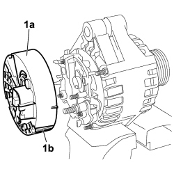
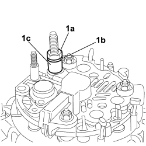

5530A24 ALTERNATOR VOLTAGE REGULATOR - R.R. WITH ALTERNATOR REMOVED
- Path
- Procedures > 55 ELECTRICAL EQUIPMENT > 5530 CURRENT GENERATION > 5530A ALTERNATOR AND COMPONENTS > 5530A24 ALTERNATOR VOLTAGE REGULATOR - R.R. WITH ALTERNATOR REMOVED
- Kind
- repair procedure (removal / refitting; the operation number is the code)
- Applies to
- engines: 2.2, 1.9 JTD 8v, 1.9 JTD 16v, 2.4 JTD 20v; all production periods
- Interactive page
- https://sloeber94.github.io/elrnDB-fCrm/en/#/194000715
Applies to: engines: 2.2, 1.9 JTD 8v, 1.9 JTD 16v; all production periods
 Removing
Removing
 Refitting
Refitting1. Prise up the cover (1a) protecting the alternator electrical components by undoing retaining clips (1b).

Applies to: engines: 2.2, 1.9 JTD 8v, 1.9 JTD 16v; all production periods
1. Undo nut (1a), remove flexible washer (1b) and bush (1c).

Applies to: engines: 2.2, 1.9 JTD 8v, 1.9 JTD 16v; all production periods
1. Undo the two bolts (1a) securing the voltage regulator (1b) and remove the regulator from the alternator.

Applies to: engines: 2.2, 1.9 JTD 8v, 1.9 JTD 16v; all production periods
Refitting
Removing- Ensure the alternator protective cover and the alternator voltage regulator are undamaged.
- Carefully clean the field winding on the alternator.
- Remove cover (1a) protecting the brushes on voltage regulator (1b) to assist insertion of brushes (1c) into their seat on the alternator field winding.

Applies to: engines: 2.2, 1.9 JTD 8v, 1.9 JTD 16v; all production periods
- Insert the voltage regulator on the alternator and secure with the two bolts.
- Fit the brush protective cover.
- Insert the bush and flexible washer on the alternator electrical connection bolt, tighten and screw on the nut.
- Fit the cover protecting the electronic part of the alternator.
Applies to: engines: 2.4 JTD 20v; all production periods
Removing
Refitting1. Undo both nuts.
2. Undo the bolt.
3. Recover the rear alternator cover.

Applies to: engines: 2.4 JTD 20v; all production periods
1. Unscrew and remove both bolts.
2. Recover the alternator voltage governor.

Applies to: engines: 2.4 JTD 20v; all production periods
Refitting
Removing- Check that the voltage governor is not damaged.
- Thoroughly clean the removed parts.
- Place the voltage governor in position and tighten the two fixing bolts.
- Position the cover and secure with the bolt and both nuts.